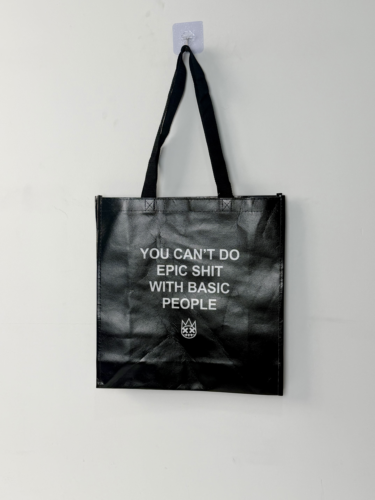

A bold black laminated tote for an American streetwear brand, featuring a confrontational typographic statement and a crown-skull icon that channels the raw energy of urban fashion culture.

The client is an emerging American streetwear label rooted in urban skate culture and hip-hop aesthetics. Operating primarily through direct-to-consumer e-commerce and select boutique retail partners, the brand has built a cult following among Gen-Z consumers who value authenticity, attitude, and anti-establishment messaging. The brand's visual identity draws from graffiti, punk graphics, and underground music culture — creating a raw, unfiltered aesthetic that stands in deliberate contrast to polished mainstream fashion.
Our customers don't want safe. They want something that makes a statement the second they walk into a room. The bag needs to be loud before they even open their mouth.
The tote project was developed as both retail shopping bag and standalone merchandise item. Unlike typical brand totes given away at purchase, this bag was positioned as a product in its own right — sold separately and carried as a daily accessory that broadcasts the wearer's alignment with the brand's confrontational worldview.
The creative concept is unapologetic attitude translated into typography. The slogan "YOU CAN'T DO EPIC SHIT WITH BASIC PEOPLE" functions as both brand manifesto and social filter — signaling to like-minded individuals while alienating those who don't share the brand's ethos. The tie-dye gradient background adds visual texture without softening the message's edge.
Bold all-caps sans-serif creates instant readability and aggressive visual presence.
Smoke-wash texture adds depth and street-culture reference without competing with the message.
Minimalist icon combining royalty and rebellion — the brand's core tension in a single mark.
High-gloss finish creates light-catching street presence and weather-resistant durability.
Streetwear bags must withstand the daily abuse of urban environments — subway commutes, skate park sessions, and all-weather conditions. The specification prioritizes material toughness and print durability over lightweight convenience.
| Parameter | Specification | Test Standard |
|---|---|---|
| Load Capacity | 8 kg | ASTM D5265 |
| Abrasion Resistance | > 500 cycles | ASTM D4060 |
| Water Resistance | Grade 5 (fully resistant) | AATCC 22 |
| Seam Strength | > 30 N/cm | ASTM D1683 |
The production workflow integrates woven-fabric durability with high-fidelity gradient printing. The five-stage process ensures that the tie-dye background and bold typography maintain their impact through daily urban use.
120gsm woven PP via circular loom. Black base tape for maximum contrast with white typography.
Opaque white gravure layer for tie-dye gradient and typography areas. Ensures color vibrancy on black substrate.
Four-color gravure for smoke-wash gradient background. 175 LPI resolution for smooth tonal transitions.
25-micron gloss BOPP for abrasion protection and street-ready light reflection. Calendered for mirror finish.
Precision die-cutting. Black woven handles attached with reinforced cross-stitch. Abrasion sampling per batch.
The tote was released simultaneously through the brand's e-commerce store, select streetwear boutiques in Los Angeles and New York, and as a limited-edition pop-up exclusive in Tokyo. The bag's confrontational messaging generated immediate social-media conversation, with customers posting photos of themselves carrying the tote in high-traffic urban locations.
Key Insight: The brand discovered that the tote functioned as a "social filter" — customers reported that carrying the bag attracted compliments and conversation from strangers who shared their cultural sensibilities, while deterring interactions they didn't want. The bag had become a wearable attitude statement.
The tie-dye background proved particularly effective for photography. Unlike flat-color bags that look identical in every photo, the gradient smoke-wash created slightly different visual effects under different lighting conditions — making each customer's social-media post feel unique and personally authentic.
Three design decisions differentiate this streetwear tote from standard fashion shopping bags. Each leverages the psychology of subcultural identity and social signaling.
The confrontational text doesn't just communicate brand attitude — it actively filters the wearer's social environment. People who resonate with the message feel immediate kinship; those who don't self-select away. In an era of algorithmic social curation, the bag performs real-world filtering through pure typography.
The high-gloss laminated surface catches streetlight, sunlight, and nightclub lighting — creating dynamic visual effects that make the bag impossible to ignore in urban environments. This light-catching quality transforms a static bag into a moving light sculpture during night commutes.
Streetwear consumers have zero tolerance for flimsy products. The woven PP construction signals toughness and authenticity — the bag can be thrown around, rained on, and overstuffed without failing. This physical durability becomes part of the brand's credibility.
We manufacture edgy, attitude-driven bags for streetwear, skate, and youth-culture brands. From gradient printing to woven durability, we create packaging that makes a statement before anything comes out of it.